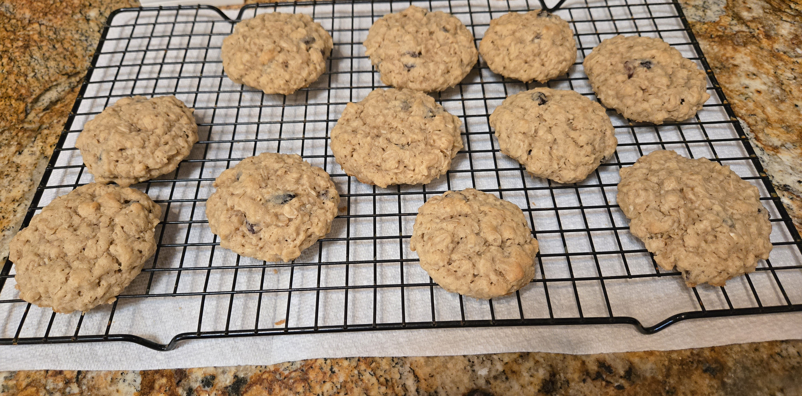

The verdict is out! Oatmeal raisin cookies are the healthiest cookies to eat! They're packed with oats that are beneficial to the heart and provide fiber, too. The raisins are also a good source of fiber, potassium, iron and antioxidants that encourage good digestion, heart health and bone strength. Oatmeal raisin cookies are a healthy alternative to other types of cookies.
Indeed, oatmeal raisin cookies have the best of both worlds. They're healthy yet taste sweet at the same time. There is no guilt in eating them. You can feel good about eating these type of cookies. The recipe below can also be modified to suit your taste buds. Feel free to adjust as needed.
Source: